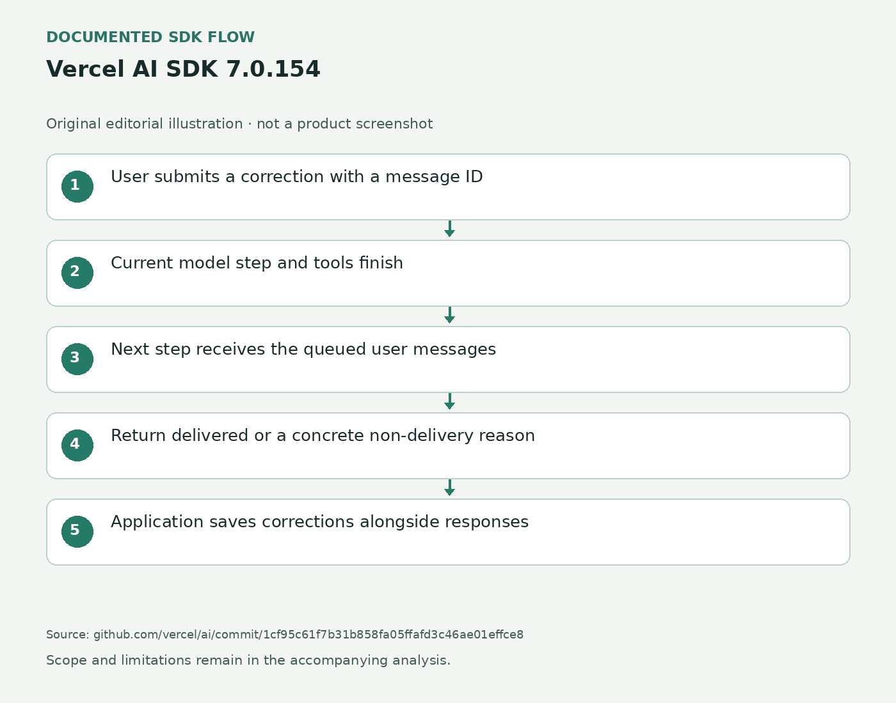

纠正不必重开任务
在天气查询、资料整理或多工具任务里，用户常在代理开始后才发现条件少写了一项。旧接法可以在每步准备时读取应用队列，但模型正在输出最终答案时，循环可能直接结束，排队消息就没有进入下一步；保存结果时也容易漏掉这句追加说明。AI SDK 7.0.154把这段交接做成显式能力：应用先创建steering对象，把它交给文本生成或ToolLoopAgent，再在用户补充时提交消息。输入仍是普通用户指令，输出多了可用于界面判断的送达结果。
Vercel AI SDK 7.0.154 · 开发工具 / SDK更新

在天气查询、资料整理或多工具任务里，用户常在代理开始后才发现条件少写了一项。旧接法可以在每步准备时读取应用队列，但模型正在输出最终答案时，循环可能直接结束，排队消息就没有进入下一步；保存结果时也容易漏掉这句追加说明。AI SDK 7.0.154把这段交接做成显式能力：应用先创建steering对象，把它交给文本生成或ToolLoopAgent，再在用户补充时提交消息。输入仍是普通用户指令，输出多了可用于界面判断的送达结果。
当前工具调用不会被这条消息突然打断。SDK等这一轮模型和工具完成，再按接收顺序加入独立的用户消息；如果最后答案结束时还有消息等待，循环可以再走一步，但原有停止条件仍优先。默认单步的调用也需要配置合适的停止条件，否则不能期待它自动延长。对用户来说，点击发送到实际接手之间存在等待。应用可以显示“下一步处理”，而不宜立即把正在执行的动作标成已改变；已经发出的邮件或写入也不会因追加一句话自动撤销。每个steering对象只服务一次调用，重新发起任务时要重新创建，不能把上个任务的排队消息带入新任务。
维护者提供的结果包含已送达和未送达两类，并保留消息标识、内容与原因。任务已结束、达到停止条件、等待工具结果、被中止或执行错误都会影响送达；应用在准备下一步时重建消息而漏掉修正，也有对应原因。同一标识再次提交会返回第一次结果，便于网络重试时避免重复追加。这里确认的是消息确实进入模型输入，不是模型遵守了要求。用户仍需要看到最终产物或动作结果，才能判断城市、范围或格式是否已经按要求改变。
追加消息不会自动成为responseMessages的一部分。应用必须把每步的steeringMessages与助手回复按顺序存回对话，否则刷新后会出现代理像是无缘无故改方向的记录。维护者将流式UI消息、跨进程steering与其他Agent类型支持列为后续工作，本期不能写成所有聊天组件都已接好。这个实验接口适合已有代理循环的开发团队；接入时最值得检查的是最终答案期间追加、审批等待期间追加和重载历史三条路径，而不是只演示正常工具运行时收到一条补充。